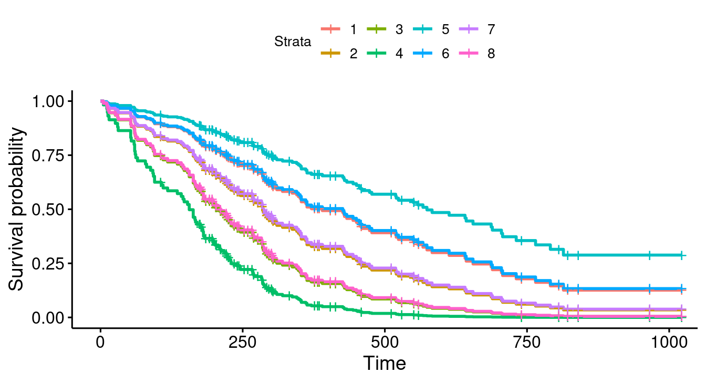
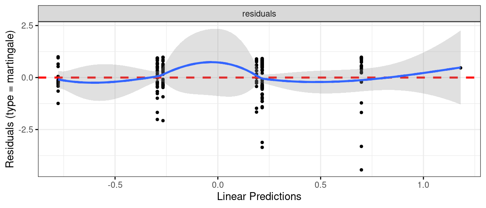

But what if response is time until event (eg. time of survival after surgery)?
Additional complication: event might not have happened at end of study (eg. patient still alive). But knowing that patient has “not died yet” presumably informative. Such data called censored.
Enter survival analysis, in particular the “Cox proportional hazards model”.
Explanatory variables in this context often called covariates.
Packages
Install packages survival and survminer if not done.
library(tidyverse)
── Attaching core tidyverse packages ──────────────────────── tidyverse 2.0.0 ──
✔ dplyr 1.1.2 ✔ readr 2.1.4
✔ forcats 0.5.0 ✔ stringr 1.5.0
✔ ggplot2 3.4.2 ✔ tibble 3.2.1
✔ lubridate 1.9.2 ✔ tidyr 1.3.0
✔ purrr 1.0.1
── Conflicts ────────────────────────────────────────── tidyverse_conflicts() ──
✖ dplyr::filter() masks stats::filter()
✖ dplyr::lag() masks stats::lag()
ℹ Use the conflicted package (<http://conflicted.r-lib.org/>) to force all conflicts to become errors
library(survival)library(survminer)
Loading required package: ggpubr
Attaching package: 'survminer'
The following object is masked from 'package:survival':
myeloma
library(broom)library(marginaleffects)
Example: still dancing?
12 women who have just started taking dancing lessons are followed for up to a year, to see whether they are still taking dancing lessons, or have quit. The “event” here is “quit”.
inst time status age
Min. : 1.00 Min. : 5.0 Min. :1.000 Min. :39.00
1st Qu.: 3.00 1st Qu.: 166.8 1st Qu.:1.000 1st Qu.:56.00
Median :11.00 Median : 255.5 Median :2.000 Median :63.00
Mean :11.09 Mean : 305.2 Mean :1.724 Mean :62.45
3rd Qu.:16.00 3rd Qu.: 396.5 3rd Qu.:2.000 3rd Qu.:69.00
Max. :33.00 Max. :1022.0 Max. :2.000 Max. :82.00
NA's :1
sex ph.ecog ph.karno pat.karno
Min. :1.000 Min. :0.0000 Min. : 50.00 Min. : 30.00
1st Qu.:1.000 1st Qu.:0.0000 1st Qu.: 75.00 1st Qu.: 70.00
Median :1.000 Median :1.0000 Median : 80.00 Median : 80.00
Mean :1.395 Mean :0.9515 Mean : 81.94 Mean : 79.96
3rd Qu.:2.000 3rd Qu.:1.0000 3rd Qu.: 90.00 3rd Qu.: 90.00
Max. :2.000 Max. :3.0000 Max. :100.00 Max. :100.00
NA's :1 NA's :1 NA's :3
meal.cal wt.loss
Min. : 96.0 Min. :-24.000
1st Qu.: 635.0 1st Qu.: 0.000
Median : 975.0 Median : 7.000
Mean : 928.8 Mean : 9.832
3rd Qu.:1150.0 3rd Qu.: 15.750
Max. :2600.0 Max. : 68.000
NA's :47 NA's :14
inst time status age
Min. : 1.00 Min. : 5.0 Min. :1.000 Min. :39.00
1st Qu.: 3.00 1st Qu.: 174.5 1st Qu.:1.000 1st Qu.:57.00
Median :11.00 Median : 268.0 Median :2.000 Median :64.00
Mean :10.71 Mean : 309.9 Mean :1.719 Mean :62.57
3rd Qu.:15.00 3rd Qu.: 419.5 3rd Qu.:2.000 3rd Qu.:70.00
Max. :32.00 Max. :1022.0 Max. :2.000 Max. :82.00
sex ph.ecog ph.karno pat.karno
Min. :1.000 Min. :0.0000 Min. : 50.00 Min. : 30.00
1st Qu.:1.000 1st Qu.:0.0000 1st Qu.: 70.00 1st Qu.: 70.00
Median :1.000 Median :1.0000 Median : 80.00 Median : 80.00
Mean :1.383 Mean :0.9581 Mean : 82.04 Mean : 79.58
3rd Qu.:2.000 3rd Qu.:1.0000 3rd Qu.: 90.00 3rd Qu.: 90.00
Max. :2.000 Max. :3.0000 Max. :100.00 Max. :100.00
meal.cal wt.loss
Min. : 96.0 Min. :-24.000
1st Qu.: 619.0 1st Qu.: 0.000
Median : 975.0 Median : 7.000
Mean : 929.1 Mean : 9.719
3rd Qu.:1162.5 3rd Qu.: 15.000
Max. :2600.0 Max. : 68.000
Warning: Matrix columns are not supported as predictors and are
therefore omitted. This may prevent computation of the
quantities of interest. You can construct your own prediction
dataset and supply it explicitly to the `newdata` argument.
s <-survfit(lung.3, newdata = lung.new, data = lung)g <-ggsurvplot(s, conf.int = F)
The plot
g

Discussion of survival curves
Best survival is teal-blue curve, stratum 5, females with ph.ecog score 0.
Next best: blue, stratum 6, females with score 1, and red, stratum 1, males score 0.
Worst: green, stratum 4, males score 3.
For any given ph.ecog score, females have better predicted survival than males.
For both genders, a lower score associated with better survival.
The coefficients in model 3
tidy(lung.3) %>%select(term, estimate, p.value)
# A tibble: 2 × 3
term estimate p.value
<chr> <dbl> <dbl>
1 sex -0.510 0.00958
2 ph.ecog 0.483 0.000266
sex coeff negative, so being higher sex value (female) goes with less hazard of dying.
ph.ecog coeff positive, so higher ph.ecog score goes with more hazard of dying
Two coeffs about same size, so being male rather than female corresponds to 1-point increase in ph.ecog score. Note how survival curves come in 3 pairs plus 2 odd.
Martingale residuals for this model
No problems here:
ggcoxdiagnostics(lung.3) +geom_smooth(se = F)
`geom_smooth()` using formula = 'y ~ x'
`geom_smooth()` using method = 'loess' and formula = 'y ~ x'

When the Cox model fails
Invent some data where survival is best at middling age, and worse at high and low age: